Exploración. Mismo progreso de muestra: Asia terminada, Norteamérica en la semana 3, el resto sin empezar.
Lo de hoy: todo lo que falta, con candado gris.
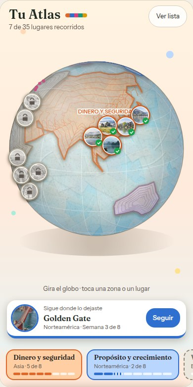
Solo los 2 siguientes, con foto borrosa y “?”. El resto, puntitos de color.
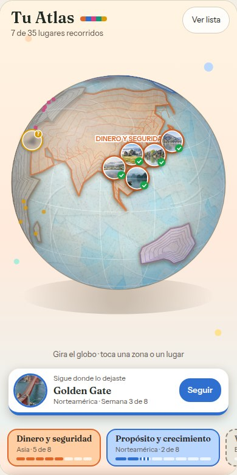
Todo visible, pero a lápiz. Se pinta cuando llegas.
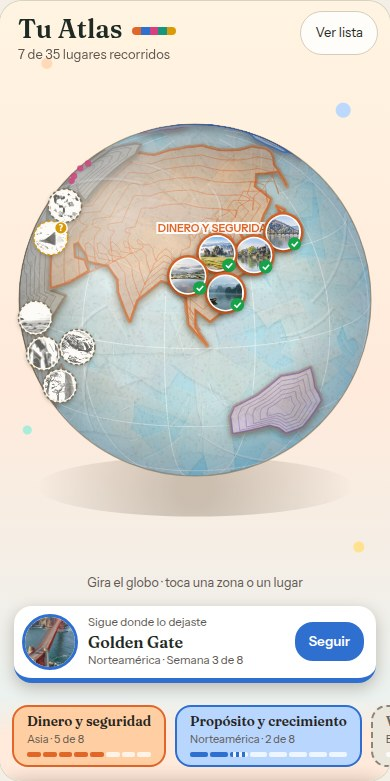
Huecos vacíos numerados para coleccionar; el siguiente con “?”.
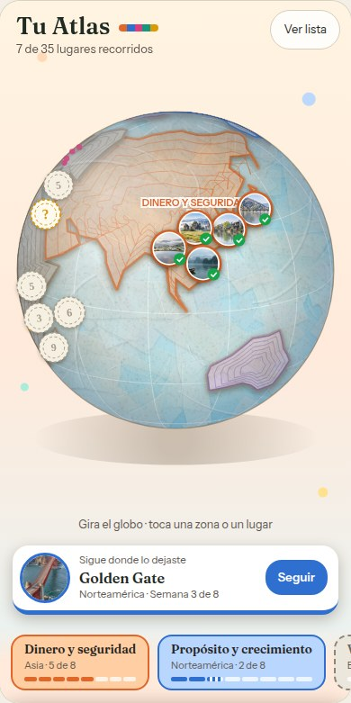
Norteamérica abierta. Las postales que faltan siguen la misma idea.
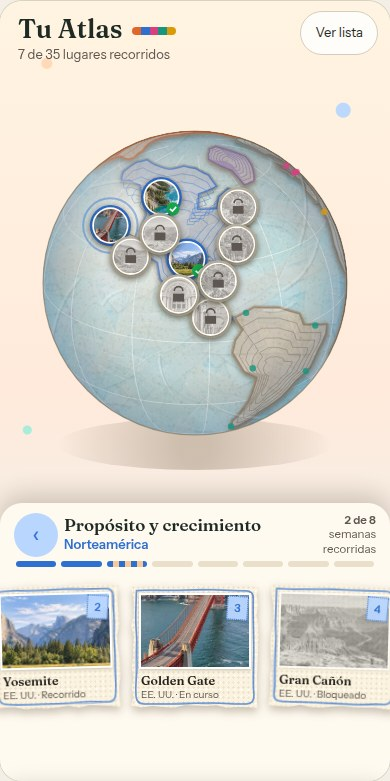
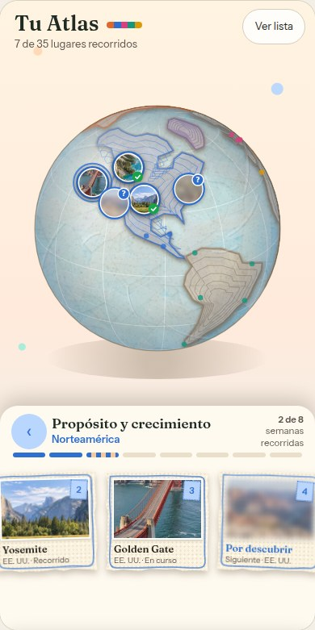
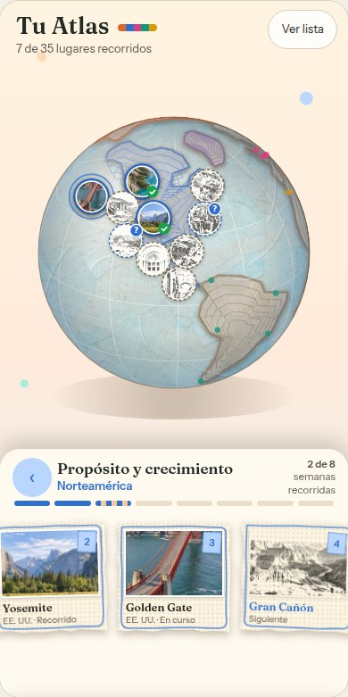
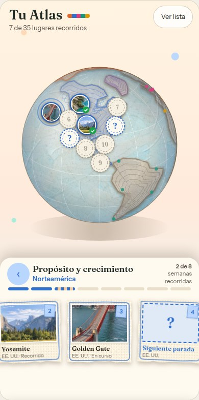
En B y D el lugar no se nombra ni se ve: “Lugar por descubrir”. En C se ve a lápiz.
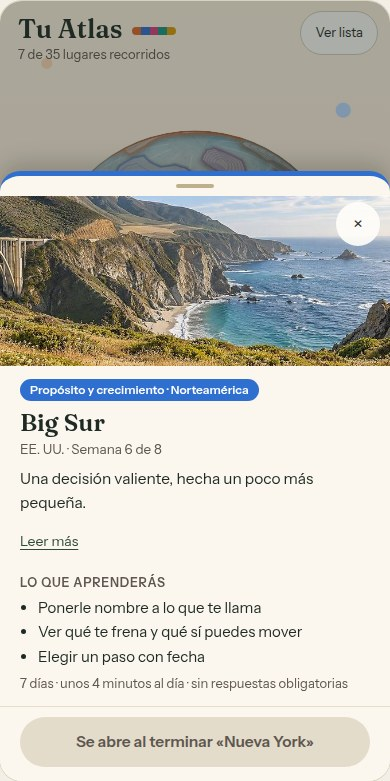
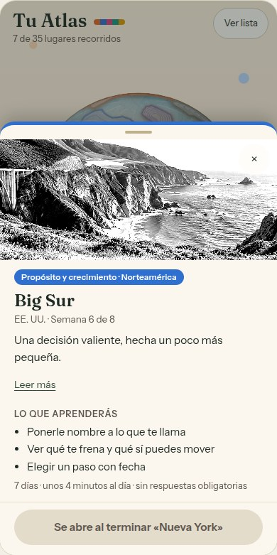
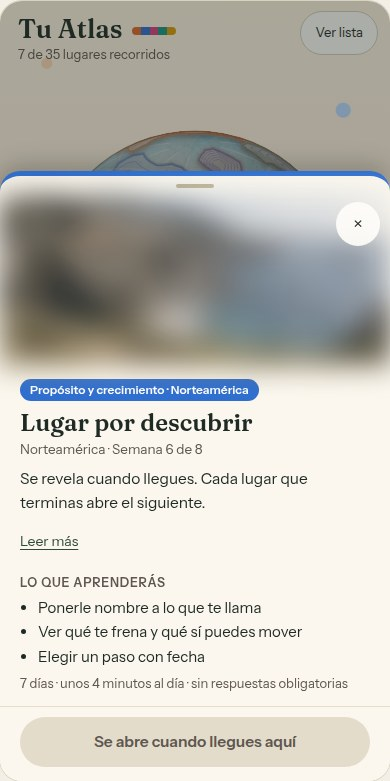